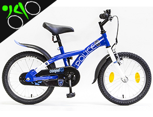
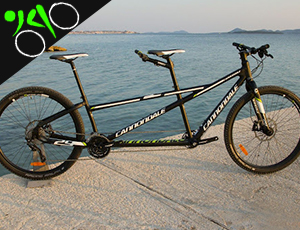
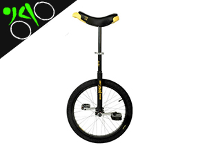
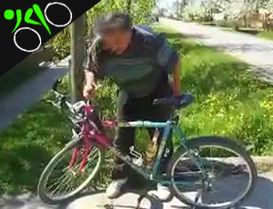

MTB
BMX, an abbreviation for bicycle motocross or bike motocross, is a cycle sport performed on BMX bikes,
either in competitive BMX racing or freestyle BMX, or else in general on- or off-road recreation. BMX began when young cyclists
appropriated motocross tracks for fun, racing and stunts, eventually evolving specialized BMX bikes and competitions.

Gyermek bicikli
Magyarországra, a Weiss-gyár felismerte a hazai gyártásban rejlő lehetőséget.
1928. december 12-én kerékpárlicencet vásároltak a grazi Puch Művektől.
A Weiss-művek kerékpárjai Csepel márkanév alatt készültek, az első 200 még Grazban.

Tandem
BMX, an abbreviation for bicycle motocross or bike motocross, is a cycle sport performed on BMX bikes,
either in competitive BMX racing or freestyle BMX, or else in general on- or off-road recreation. BMX began when young cyclists
appropriated motocross tracks for fun, racing and stunts, eventually evolving specialized BMX bikes and competitions.

Monocikli
BMX, an abbreviation for bicycle motocross or bike motocross, is a cycle sport performed on BMX bikes,
either in competitive BMX racing or freestyle BMX, or else in general on- or off-road recreation. BMX began when young cyclists
appropriated motocross tracks for fun, racing and stunts, eventually evolving specialized BMX bikes and competitions.

Béla biciklije
Ez a canga nem eladó, kizárólag megtekinthető boltunkban, eszemi értéke
minden nizonnyal felbecsülhetetlen. Cégünk legféltetebb kincsét Ön is megtekintehti minden pénteken 13:00-tól
3500 forint ellenében.